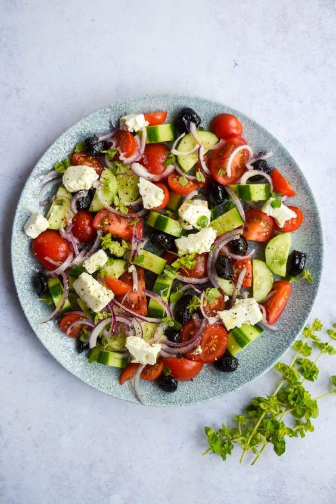
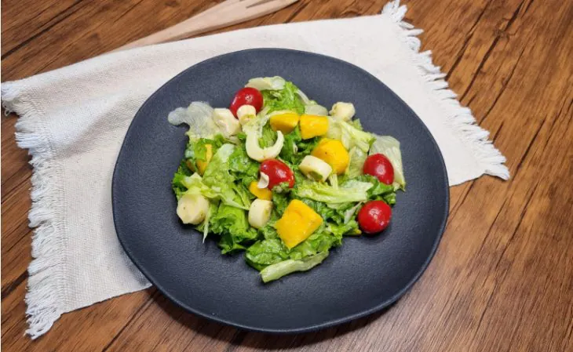

Salada Primavera
Ingredientes
- 1 maço de alface americana
- 1 maço de alface crespa
- 1 xícara de chá de tomate-cereja (cortados ao meio)
- 1 xícara de chá de palmito pupunha cortados
- 1 manga picada
- Sal, azeite e orégano a gosto
Modo de Preparo
- Pique as folhas de alface com as mãos grosseiramente e transfira para um recipiente grande;
- Adicione o tomate-cereja, o palmito, a manga, tempere com sal, azeite, orégano e misture bem;
- Agora é só servir.
